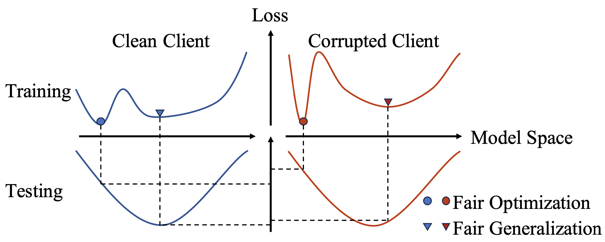
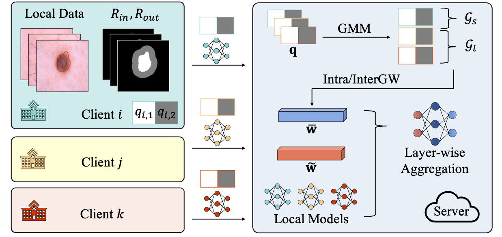
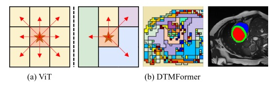
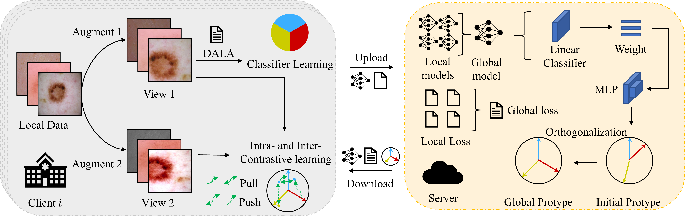
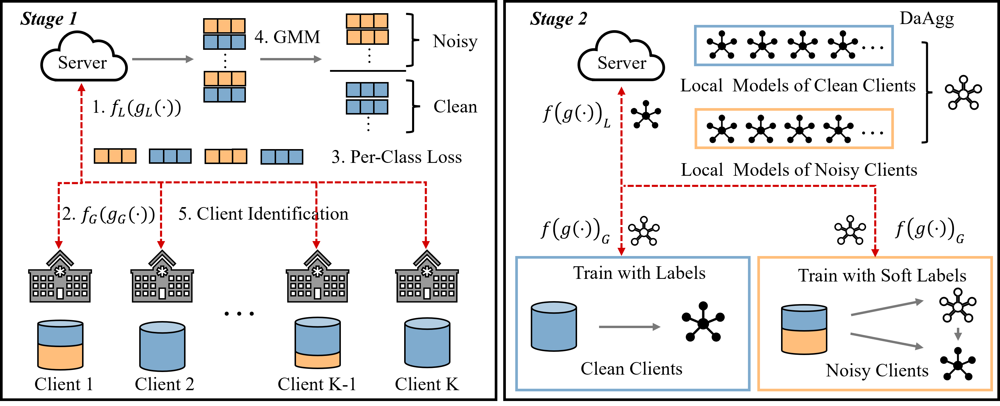

Ph.D. Student
School of Electronic Information and Communications
Huazhong University of Science and Technology
Office: Room B308, WNLO
Email: wnn2000 [at] hust.edu.cn
My research interests lie in developing robust AI systems under real-world constraints (distributed datasets, imperfect labels, class imbalance, etc.).
News
Publications

From Optimization to Generalization: Fair Federated Learning against Quality Shift via Inter-Client Sharpness Matching. Nannan Wu, Zhuo Kuang, Zengqiang Yan, and Li Yu.
International Joint Conference on Artificial Intelligence (IJCAI), 2024.
(CCF Rank A)
[paper] [code]

FedA3I: Annotation Quality-Aware Aggregation for Federated Medical Image Segmentation against Heterogeneous Annotation Noise. Nannan Wu, Zhaobin Sun, Zengqiang Yan, and Li Yu.
AAAI Conference on Artificial Intelligence (AAAI), 2024.
(CCF Rank A)
[paper] [code]

DTMFormer: Dynamic Token Merging for Boosting Transformer-based Medical Image Segmentation.
Zhehao Wang, Xian Lin, Nannan Wu, Li Yu, Kwang-Ting Cheng, Zengqiang Yan.
AAAI Conference on Artificial Intelligence (AAAI), 2024.
(CCF Rank A)

FedIIC: Towards Robust Federated Learning for Class-Imbalanced Medical Image Classification. Nannan Wu, Li Yu, Xin Yang, Kwang-Ting Cheng, and Zengqiang Yan.
Medical Image Computing and Computer-Assisted Intervention (MICCAI), 2023.
(CCF Rank B) (Early Accept, top 14% in total 2253 submissions)
[paper] [code]

FedNoRo: Towards Noise-Robust Federated Learning by Addressing Class Imbalance and Label Noise Heterogeneity. Nannan Wu, Li Yu, Xuefeng Jiang, Kwang-Ting Cheng, and Zengqiang Yan.
International Joint Conference on Artificial Intelligence (IJCAI), 2023.
(CCF Rank A)
[paper] [code]
IEEE Transactions on Emerging Topics in Computational Intelligence (TETCI)
Selected Awards
Huazhong University of Science and Technology - China Optics Valley Morning Star Scholarship (华中科技大学-中国光谷晨星奖学金) - 1/400+(all undergraduate students in the EIC class of 2018), in 2021.
First Prize in the National Mathematics Competition for undergraduate Students (全国大学生数学竞赛一等奖), in 2020.
Zhuang Caifang & Zhuang Chongwen Scholarship (庄采芳・庄重文奖学金) - 201/200000+(all high school graduates in Fujian Province of China in the year 2018), in 2018.